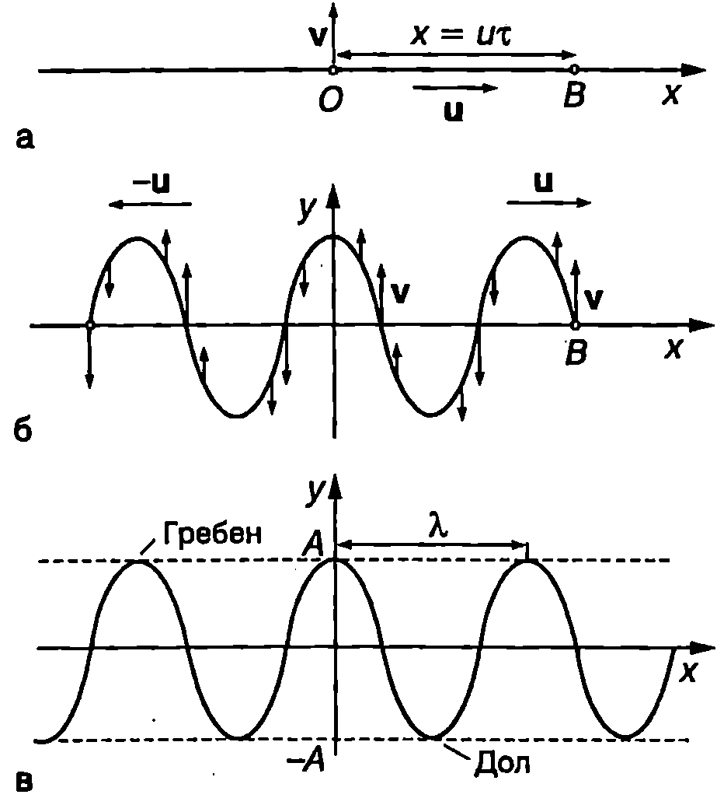
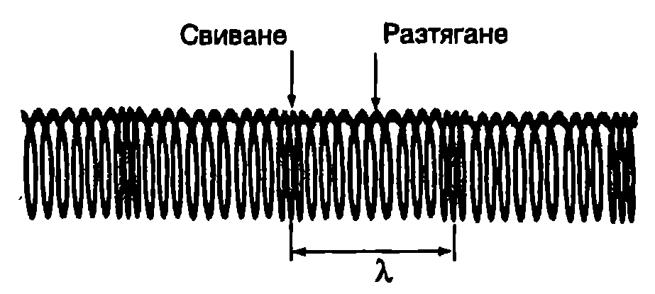
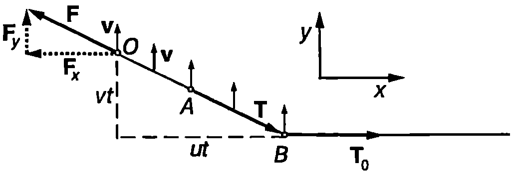

Вълни в неограничена среда
Механични трептения се разпространяват в газове, течности и твърди тела. За средата, в която се разпространяват трептенията, се използва моделът на непрекъснатата еластична материална среда. В този модел не се отчита атомно-молекулният строеж на веществото. Свойствата на средата се описват с макроскопични величини: плътност, еластични модули и др. Затова частици на средата се наричат не отделните атоми и молекули, а малки макроскопични елементи от средата, в които обаче се съдържат много голям брой молекули. Например в $1~\mathrm{\mu m^3}$ ($10^{-18}~\mathrm{m^3}$) въздух при нормални условия има около 24 милиона молекули. Размерът на подобна частица е много по-голям от средното разстояние между молекулите, но, от друга страна, е много по-малък от характерните дължини, описващи разпространение то на трептенията в средата (например от дължината на вълната на звуковите вълни). Средата е еластична, ако деформациите, породени от външни сили, изчезват напълно след прекратяване действието на силите.
Да разгледаме тяло, което извършва трептения. Движението на тялото предизвиква деформации на заобикалящата го среда и в нея възникват еластични сили. Еластичните сили действат на частиците от средата, разположени близо до тялото, като се стремят да ги върнат в равновесните им положения. Освен това те действат и на по-отдалечени частици и ги отклоняват от равновесните им положения. Тези отклонения пораждат нови еластични сили, които отклоняват още по-отдалечени частици. Така деформациите обхващат все по-далечни области от средата и техните частици започват да трептят. Механични деформации, които се разпространяват в еластична среда, се наричат еластични или механични вълни.
Тялото или устройството, чието въздействие върху средата поражда деформациите, се нарича източник на механични вълни. Скоростта $u$, с която се разпространяват деформациите в средата, се нарича скорост на механичната вълна. Скоростта на вълната е различна от скоростта на движение на частиците. При вълновия процес всяка частица извършва трептене около равновесното си положение, като това трептене се разпространява със скорости в средата и обхваща все нови и нови частици.
Механична среда, която няма външни граници, се нарича отворена или неограничена среда. В неограничена среда източниците създават бягащи вълни, които се отдалечават от източника и никога не се връщат обратно. Бягащите вълни пренасят през средата енергия и импулс, поради което за тяхното поддържане е необходимо източникът непрекъснато да извършва работа върху средата и да и предава импулс и енергия. Трябва да се подчертае, че бягащата вълна пренася енергия и импулс, но не пренася вещество. Частиците на средата извършват само трептене около равновесните си положения, а в резултат на работата на еластичните сили става предаване на енергия и импулс от частица на частица.
Модел на неограничена среда е безкрайна среда, която запълва цялото пространство. Ако средата има граници, след като ги достигне, вълната може се отрази и да започне да се разпространява в обратната посока. Например в планината ясно се чува отразеното от отсрещна скала ехо. От горист склон обаче ехо почти не се долавя, защото той силно поглъща звука. Среди с крайни размери, чиито граници напълно поглъщат механичните вълни, също се разглеждат като отворени (неограничени) среди. Бягащите вълни, излъчени от източника, се поглъщат напълно от границите и отразена вълна не се образува, което е равносилно на разпространение на бягаща вълна в безкрайна среда.
Когато източникът извършва хармонично трептене, бягащата вълна се нарича хармонична вълна. При хармоничната бягаща вълна всички движещи се частици от средата извършват принудено хармонично трептене с кръгова честота $\omega$, равна на кръговата честота на трептене на източника. Кръговата честота на трептене и се нарича кръгова честота на вълната, а честотата $\nu = \omega/(2\pi)$ честота на Вълната. Периодът на трептене $\displaystyle T = \frac{1}{\nu}$ се нарича период на вълната.
Вълни по опъната струна
Като прост пример за хармонични бягащи вълни ще разгледаме вълните, които се разпространяват по безкрайна опъната струна. Нека в момента $t = 0$ под действие на външна сила, насочена перпендикулярно на струната (Фиг. \ref{fig:75.1}а), точка $O$ с координата $x = 0$ започне принудено хармонично трептене $y =A\sin\omega t$. Трептенето се предава по струната със скорост $u$ от частица на частица. Всяка следваща частица започва да трепти със същата кръгова честота $\omega$, но с известно закъснение: в двете посоки на оста $x$ се разпространяват бягащи хармонични вълни (Фиг. \ref{fig:75.1}б). Стрелките на Фиг. \ref{fig:75.1}б показват скоростите на частиците от струната. Няма да отчитаме предаването на енергия от струната на околния въздух, нито нагряването и в резултат на превръщането на част от механичната енергия на трептене във вътрешна енергия (когато деформациите не са абсолютно еластични). При тези условия всички частици от струната извършват трептения с еднаква амплитуда $A$, която се нарича амплитуда на вълната.
За време $t = \tau$ трептенето се разпространява на разстояние $x = \tau u$ и точка $B$ с координата $x$ (Фиг. \ref{fig:75.1}а) започва да трепти така, както е трептяла точка $O$ в началния момент $t = 0$. В произволен момент $t$ движението на точка в ще съответства на движението на точка $O$ в по-ранния момент $t - \tau$ : $$y = A \sin \omega (t - \tau) = A \sin \omega (t - \frac{x}{u}). $$ Уравнение \eqref{eq:75.1} описва разпространението на хармонична вълна в положителната посока на оста $x$. Уравнението на вълна, разпространяваща се в противоположната посока, се получава като в уравнение \eqref{eq:75.1} се промени посоката на скоростта $u$, т.е. като се замести $u$ с $-u$: $$y = A \sin \omega (t + \frac{x}{u}). $$ По-нататък ще разглеждаме само вълни, които се разпространяват в положителната посока на оста $x$. Величината $$\varphi = \omega(t - \frac{x}{u}) $$ се нарича фаза на вълната. Най-малкото разстояние между две точки, които трептят с фазова разлика $2\pi$, се нарича дължи на на вълната 2. Да означим с $x_1$ и $x_2$ координатите на две такива точки. От уравнение \eqref{eq:75.3} получаваме $$2 \pi= \varphi_1 - \varphi_2 = \frac{\omega}{u} (x_2 - x_1) = \frac{\omega}{u} \lambda,$$ откъдето изразяваме връзката между дължината на вълната, скоростта и кръговата честота (честотата) на механичната вълна: $$u = \lambda \frac{\omega}{2\pi} \text{ или }{u} = \lambda v. $$

`Фиг. 75.1`
Скоростта на бягащата вълна е равна на произведението на дължината на вълната $\lambda$ и честотата $\nu$. Дължината на вълната $\lambda$ характеризира пространствената периодичност на вълновия процес. Ако в даден момент $t$ направим снимка на струната, ще видим, че тя има форма на синусоида (Фиг. \ref{fig:73.1}в). Отклонението $y$ на всяка точка от струната в момента $t$ зависи от координатата $x$ по синусов закон. Точките, които в дадения момент имат максимално отклонение $y = A$, се наричат максимуми или гребени на вълната. Точките, които имат максимално по големина отклонение, но в противоположната посока, се наричат минимуми или долове на вълната (Фиг. \ref{fig:75.1}в). От даденото определение за дължина на вълната следва, че разстоянието между два съседни максимума или минимума е равно на дължината на вълната $\lambda$.
Величината $$k=\frac{2\pi}{\lambda} $$ се нарича вълново число. Вълновото число се измерва в единици m$^-1$ или cm$^{-1}$. Скоростта на вълната може да се изрази чрез вълновото число и кръговата честота: $$u = \lambda\nu = \frac{2\pi\nu}{k}=\frac{\omega}{k} $$ Заместваме скоростта $u$ от уравнение \eqref{eq:75.6} в \eqref{eq:75.1} и получаваме уравнението на бягаща хармонична вълна в друг вид, който по-често се използва във физиката: $$y = A\sin(\omega t - kx). $$ Фазата на бягащата вълна $\varphi = \omega t-kx$ се изменя както във времето, така и в пространството. Кръговата честота $\omega$ характеризира бързината, с която се изменя фазата на дадена точка с течение на времето $t$. Вълновото число $k$, от друга страна, е равно на скоростта, с която се изменя фазата в даден момент от времето в зависимост от координатата $x$.
Напречни и надлъжни вълни
Когато частиците на средата трептят в направление, перпендикулярно на посоката на разпространение на вълната, вълните се наричат напречни вълни (Фиг. \ref{fig:75.2}а). Ако частиците трептят в направлението, в което се разпространява вълната, вълни те са надлъжни (Фиг. \ref{fig:75.2}б). Вълните по опъната струна са пример за напречни вълни. Надлъжни вълни могат да се наблюдават например по разтегната мека пружина, ако периодично се свива и разтяга единият й край (Фиг. \ref{fig:75.3}). Образуват се области на свиване и на разтягане на пружината, които се разпространяват по нейната дължина. Местата с най-голямо свиване съответстват на максимумите на вълната, а местата с най-голямо разтягане - на минимумите на надлъжната вълна.

`Фиг. 75.2`
При разпространение на надлъжни вълни се извършват обемни деформации на свиване и разширяване на материалната среда. Газовете и течностите, както и твърдите тела, притежават обемна еластичност: при намаляване на обема налягането нараства и възникват сили на натиск, насочени перпендикулярно на повърхност та на разглеждания обем, които се противопоставят на външните сили. Затова надлъжни вълни се разпространяват както в твърди тела, така и в течности и в газове.
Предаването на трептенията при напречните вълни се извършва от тангенциални еластични сили, които възникват при деформации на хлъзгане. Всеки движещ се елемент се хлъзга спрямо заобикалящите го части от средата и взаимодейства с тях чрез възникващите при хлъзгането еластични сили, които са насочени по допирателната към повърхността на елемента. Деформации на хлъзгане възникват в твърдите тела при изменението на тяхната форма (вж.~\ref{sec:21}). Следователно напречни вълни могат да се разпространяват само в среди, които притежават еластичност на формата, каквито са твърдите тела.

`Фиг. 75.3`
По-специфичен е случаят с повърхнинните вълни, които се разпространяват по свободната повърхност на течностите. За тях определяща роля играят гравитационните сили и силите на повърхностно напрежение. При разпространение на повърхнинна вълна частиците на течността извършват едновременно напречни и надлъжни трептения и описват елипси (или по-сложни траектории).
Скорост на вълните
За да изясним от какво зависи скоростта на разпространение на механичните вълни, ще направим аналогия с хармоничното трептене. Например кръговата честота на пружинно махало е $\displaystyle \omega = \sqrt{\frac{k}{m}}$. Тя зависи от два фактора: от инертността на теглилката, която се характеризира с масата $m$, и от еластичните свойства на пружината, които определят коефициента на еластичност $k$. Скоростта на разпространение на механичните трептения в материална среда се определя от същите два фактора: инертност и еластичност. Колкото по-инертна е средата, толкова по-бавно се разпространяват вълните. Обратно, ако еластичните сили, които възникват при деформациите на средата, са големи, вълните се разпространяват по-бързо. До казва се, че скоростта на механичните вълни зависи от инертността и еластичността на средата по аналогичен начин, както кръговата честота на свободните хармонични трептения: $$u= \sqrt\frac{\text{еластичност}}{\text{инертност}}. $$
В зависимост от вида на вълните еластичността и инертността на средата се характеризират с различни величини. При разпространение на напречни вълни в твърда среда се извършват деформации на хлъзгане. В този случай еластичните сили зависят от модула на хлъзгане $G$ (вж. част 1, стр. 116,~\ref{sec:21}). Мярка за инертността на средата е нейната механичната плътност р. Скоростта на напречните вълни е $$u_\perp = \sqrt\frac{G}{\rho}. $$ При надлъжни вълни в неограничена твърда среда в направлението на разпространение на вълните се извършват деформации на едностранно свиване и разширение. Еластичните сили, които възникват, са пропорционални на еластичния модул на едностранно свиване Е’. Скоростта на надлъжните вълни е $$u_{||}= \sqrt\frac{E’}{\rho}. $$ За всички твърди тела $E’ > G$ (вж. част 1, уравнение \eqref{eq:21.11} на стр.120), поради което надлъжните вълни се разпространяват с по-голяма скорост от напречните вълни. Пример за механични вълни в твърда среда са сеизмичните вълни, които възникват при земетресение. Движението на земните пластове води до натрупване на огромни механични напрежения в сравнително малки по обем области, наречени огнище на земетресението. Огнището може да се намира на различна дълбочина: от няколко километра до стотици километри. В даден момент еластичните напрежения предизвикват разкъсване на земния пласт и освобождаване на натрупаната енергия. Част от нея се пренася от възникващите при това механични вълни. Надлъжните сеизмични вълни, наречени $P$-вълни, се разпространяват с по-голяма скорост и първи достигат местата, отдалечени от огнището. Напречните сеизмични вълни ($S$-вълни) имат по-малка скорост и се регистрират по-късно. В диаметрално направление през земното ядро преминават само надлъжните вълни, което потвърждава предположението, че Земята има течно ядро. $P$-вълните преминават през течното ядро на Земята, докато то е преграда за $S$-вълните.
Скоростта на напречните вълни по опъната струна се определя от еластичната силата на опъване $T_0$ на струната и от масата на единица дължина $\delta_0$ от струната (вж. пример 75.1): $$u = \frac{T_0}{\delta_0}. $$
Пример 75.1
В момента $t = 0$ единият край (точка $O$) на дълга опъната струна започва да се тегли с постоянна скорост $V_1$, насочена перпендикулярно на струната. Определете скоростта $u$, с която се разпространява вълновият импулс по струната (Фиг. \ref{fig:75.4}). \end{psexample}

`Фиг. 75.4`
Решение
Точките, до които е достигнал импулсът, започват да се движат с постоянна скорост $u$. На участъка $OA$ от струната действат две сили: външната сила $\vec F$ и силата на еластичност $\vec T$, с която останалата част на струната действа на разглеждания участък. Тъй като участъкът $OA$ се движи без ускорение, резултантната на двете сили трябва да е равна на нула. Следователно външната сила $\vec F$ е насочена по дължината на струната и е равна по големина на еластичната сила $\vec T$: $$\vec F = \vec T$$ Ще обърнем внимание, че при разпространението на импулса движещата се част от струната допълнително се разтяга и еластичната сила $\vec T$ е по-голяма от еластичната сила $\vec T_0$, която възниква в неподвижната опъната струна.
В момента $t$ се движи участъкът $OB$ от струната. До точките, намиращи се вдясно от точка $B$, вълновият импулс все още не е достигнал. Неподвижната част от струната действа на движещата се част с еластична сила $\vec T_0$. Тъй като дължината и масата $m$ на движещия се участък непрекъснато нарастват, уравнението на втория принцип на механиката трябва да се запише във вида: $$\vec F + \vec T_0 = \frac{d}{dt} (\vec p)$$ Импулсът $\vec p$ на струната е: $$\vec p = m \vec v = \mu \delta_0 \vec v,$$ където $\delta_0$ е линейната плътност (маса на единица дължина) на неподвижната струна. След заместване на $\vec p$ получаваме: $$\vec F + \vec T_0 = \mu \delta_0 \vec v$$ Записваме това векторно равенство по компоненти: $$- F_x + T_0 = 0, \quad F_y = \mu \delta_0 v$$ От друга страна, от подобните триъгълници на Фиг. \ref{fig:75.4} следва съотношението: $$\frac{F_y}{F_x} = \frac{v t}{u t} \quad \text{или} \quad F_y = \frac{v}{u} F_x = \frac{v}{u} T_0$$ От двете уравнения за $F_y$ определяме скоростта $u$: $$u = \sqrt{\frac{T_0}{\delta_0}}$$ Ако външната сила предизвиква по-сложно движение на свободния край $O$ (например хармонично трептене), еластичните сили, с които си взаимодействат две съседни частици от струната, се изменят с течение на времето. Да означим с $\Delta T$ максималното изменение на еластичната сила: $$\Delta T = T_{\text{max}} - T_0,$$ където $T_{\text{max}}$ е максималната стойност, която достига еластичната сила при разпространението на вълната. За вълни, при които $\Delta T \ll T_0$, получената формула за скоростта остава в сила. Такива вълни се разпространяват по струната с постоянна скорост, която зависи само от силата на опъване на струната и от нейната линейна плътност.
Задачи
-
Пресметнете скоростта на звука във вода, ако трептения с период $T = 0,!003~\mathrm{s}$ пораждат звукова вълна с дължина $\lambda = 4,!49~\mathrm{m}$.
-
Скоростта на хармонична вълна е $v = 500~\mathrm{m/s}$. Колко е дължината на вълната, ако източникът трепти с честота $f = 100~\mathrm{Hz}$?
-
За време $\Delta t$ частица от материална среда, в която се разпространява механична вълна, преминава 400 пъти през равновесното си положение. За същото време вълната се разпространява на разстояние $2000~\mathrm{m}$. Колко е дължината на вълната $\lambda$?
-
Най-дългата струна на роял е опъната със сила $T_0 = 1098~\mathrm{N}$. Масата на единица дължина от струната е $\delta_0 = 0,!065~\mathrm{kg/m}$. Колко е скоростта на напречните вълни по тази струна?
-
По струна, която е опъната със сила $F = 50~\mathrm{N}$, се разпространява напречна вълна със скорост $v = 20~\mathrm{m/s}$. При каква сила на опъване скоростта на вълните по същата струна ще бъде $v’ = 40~\mathrm{m/s}$?
-
По опъната струна се разпространява напречна хармонична вълна. Докажете, че наклонът на допирателната, прекарана през всяка точка от струната (т.е. $\displaystyle \frac{\partial y}{\partial x}$) е равен на отношението на скоростта на тази точка $v$ към скоростта на вълната $u$.